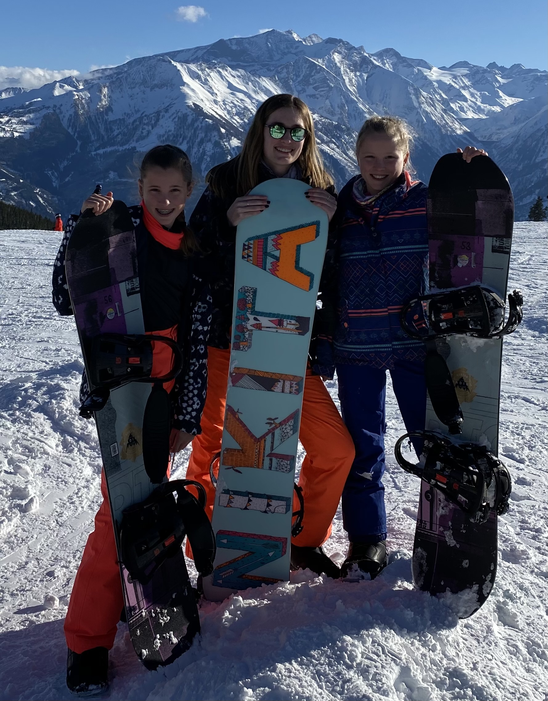

Mijn portfolio
Mijn naam is Lotte Sies, ik ben een 20 jarige studente aan de studie creative media & game technologies. Deze studie doe ik aan de hogeschool van Rotterdam. Over Rotterdam gesproken daar kom ik ook vandaan. Op deze website zal ik jullie wat meer over mijzelf vertellen.

Wat heb ik te vertellen
Mijn hobby's
Ik zal vertellen over een paar van mijn favoriete bezigheden, zoals muziek luisteren, gamen en snowboarden. Naast deze drie hobby's vind ik lezen, films kijken en met vrienden afspreken ook erg leuk.
Muziek
Vanaf jongs af aan luisterde ik altijd onzettend veel naar muziek. Wat vroeger veel popmuziek was en tegenwoordig vooral rock muziek. Mijn favoriete genre is new wave, dit is ook het genre van mijn favoriete band; The Cure. Hieronder heb ik een playlist met een paar van mijn all time favoriete nummers.
Gamen
Ook een van mijn hobby's is gamen, ik speelde vroeger vaak minecraft met mijn broertje of vrienden. Tegenwoordig speel ik vooral Sims 4, Mini Motorways, Donut County en nog veel meer kleine spellen. Het liefst kleurrijke indie spelletjes. Ik speel ook graag met vrienden, maar bord en kaartspellen zijn ook favoriet.

Snowboarden
Sinds ik ongeveer 3 jaar oud was ging ik elk jaar met mijn ouders skien. Toen ik ongeveer 14 was begon ik ook met snowboarden. Nu ga ik bijna elk jaar twee keer een weekje skien of snowboarden met vrienden of familie. En na het skien ben ik ook zeker te vinden bij de apres-ski, het zwembad of in de sauna.
Studentenleven
Studie
In 2021 heb ik mijn HAVO diploma gehaald. Dat jaar begon ik met studeren, ik deed de studie Communication and Multimedia Design (CMD). Deze studie deed ik op Hogeschool ZUYD in Maastricht, waar ik ook voor het eerst op kamers ging. Helaas was ik vaak ziek en moest ik stoppen met de studie en weer terug verhuizen naar Rotterdam. Hierdoor moest ik opnieuw beginnen met een studie in Rotterdam. Ik wilde eigenlijk precies dezelfde studie doen als in Maastricht, alleen deze bleek helemaal niet technish te zijn dus ging ik op zoek naar iets anders en dat is Creative Media & Game Technologies (CMGT) geworden aan de Hogeschool van Rotterdam.
Vereniging
Dit jaar ben ik ook voor het eerst lid geworden van een studentenvereniging. De vereniging heet het Rotterdamsch Studenten Gezelschap (RSG). Ze stammen uit 1921 en de Societeit Asker V ligt aan de Haringvliet met een prachtig uitzicht op de Willemsbrug. RSG bestaat dus al meer dan 100 jaar met een ontzettend rijke geschiedenis. Ik heb onzettend veel zin om daar alles over te leren en deel te nemen aan alles wat mijn studententijd te bieden heeft.
Familie en vrienden
Ik ben geboren en getogen in Rotterdam, waar ik ook woon bij mijn ouders. Mijn vader (Rob) komt uit Rotterdam en mijn moeder (Suzanne) komt uit limburg. Ook heb ik nog een broertje (Thijn) van 19, hij woont in Maastricht op kamers. Naast mijn ouders en ik hebben we ook nog twee katten; Leo en Simba. Verder zie ik de rest van mijn familie ook zo vaak mogelijk op feestjes. Natuurlijk zijn vrienden ook belangrijk voor mij. Al vanaf de basischool ben ik vrienden met drie meiden; Elise, Myrthe en Frouke. Met hen ben ik dus al 15+ jaar vrienden en doen we dus ook ontzettend veel samen. We gaan op vakanties, spreken vaak af en organiseren leuke dingen samen zoals cocktails maken of een high tea houden.